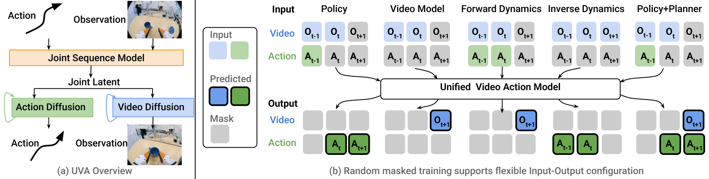
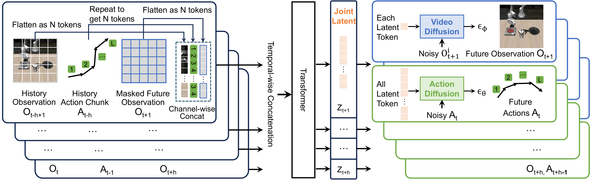
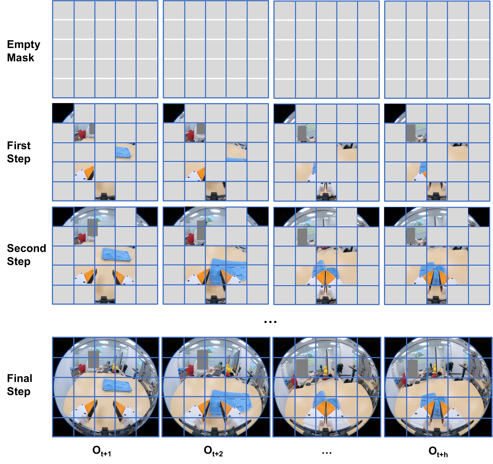
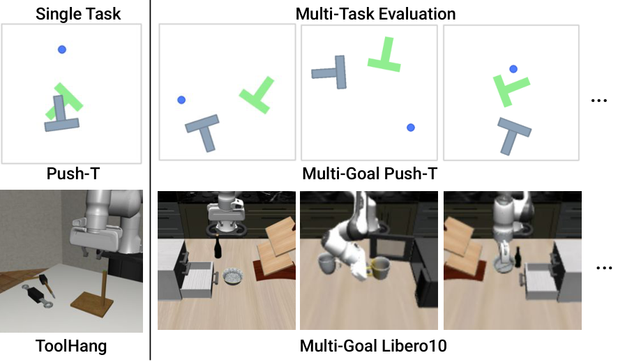
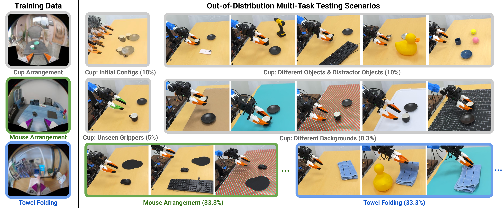
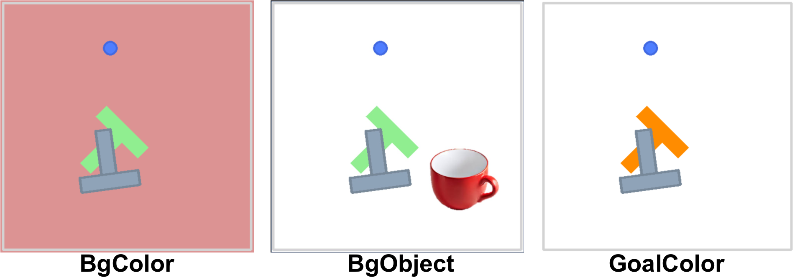
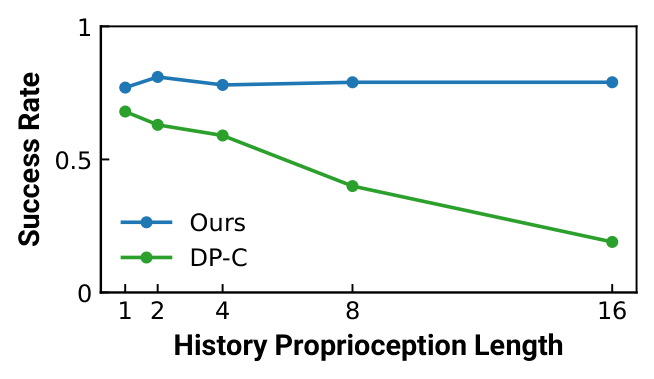
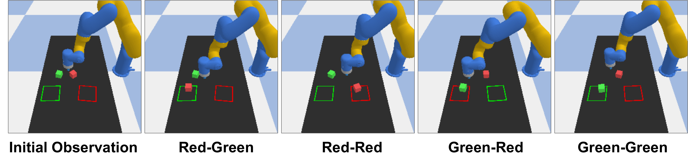

Unified Video Action Model
1. 阅读定位与组会导读
| 导读项 | 这篇论文回答什么 | 读的时候重点盯哪里 |
|---|---|---|
| 研究对象 | 一个统一模型同时支持 robot policy、视频生成、forward dynamics、inverse dynamics，以及 policy + planner。 | 不要只把它当作视频生成 policy；它的核心卖点是“同一 latent + 不同 mask/objective”。 |
| 核心矛盾 | 动作预测需要高时间频率和低延迟；视频生成需要高空间质量和较重计算。 | 看 decoupled video-action diffusion 如何在训练和推理之间拆开这两个需求。 |
| 主要贡献 | 统一视频-动作 latent、两个轻量 diffusion heads、masked training 支持多任务功能。 | 重点看“UVA-action”消融、速度分解、action-free human video 补充实验。 |
| 和 CoVAR 的关系 | UVA 是 CoVAR 论文中常作为 joint-model baseline 的方法之一。 | UVA 强调共享 latent 与解耦 heads；CoVAR 强调保留预训练 video DiT 并并联 action DiT。 |
这篇论文适合放在“video world model 能不能变成高效 robot policy”的讨论里。作者的立场不是“视频生成替代策略学习”，而是“视频生成作为额外监督帮助 latent 学动态；真正执行动作时，动作 head 可以独立快速解码”。这和很多先生成视频再通过 inverse dynamics 得到动作的二阶段方法不同。
2. 背景：为什么要统一视频与动作
2.1 action-only policy 的问题
Diffusion Policy、OpenVLA 等 action-only 或 VLA policy 可以直接从观测到动作，推理快、目标明确。但论文指出，这类模型容易过拟合训练数据中的动作历史或局部视觉线索；在视觉扰动、长历史、多任务共享动态时，额外的视频预测监督可能帮助模型理解场景变化，而不是只记动作模式。
2.2 video-generation policy 的问题
UniPi 这类方法先生成未来视频，再从视频推动作。它有两个明显代价：第一，生成高分辨率视频本身慢；第二，视频错误会传给动作预测。真实机器人控制需要频繁输出细粒度动作，因此完整视频生成不能处在 policy inference 的主路径上。
2.3 UVA 的折中
UVA 训练时联合优化视频和动作，让 latent representation 学到视觉动态与动作之间的关系；推理作为 policy 时，跳过 video diffusion head，只运行 action diffusion head。这样视频仍然提供训练监督，但不拖慢动作推理。

3. 方法详解：joint latent + decoupled diffusion + masked training
3.1 问题定义
给定历史图像观测 $\{\mathbf{O}_{t-h+1},\ldots,\mathbf{O}_t\}$ 和历史动作 chunk $\{\mathbf{A}_{t-h},\ldots,\mathbf{A}_{t-1}\}$，目标是预测未来动作 $\{\mathbf{A}_t,\ldots,\mathbf{A}_{t+h-1}\}$ 和未来观测 $\{\mathbf{O}_{t+1},\ldots,\mathbf{O}_{t+h}\}$。每个动作 chunk $\mathbf{A}_t\in\mathbb{R}^{L\times m}$，包含 $L$ 个高频动作，每个动作维度为 $m$。论文实验中设历史 horizon 和未来 horizon 相同。
| $h$ | 历史/未来 horizon，论文为简化令二者相同。 |
| $\mathbf{O}_t$ | 第 $t$ 个图像观测。 |
| $\mathbf{A}_t$ | 第 $t$ 个 action chunk，包含 $L$ 个高频动作。 |
| $N$ | 每张图像编码后的视觉 token 数。 |
| $\mathbf{Z}_{t+i}$ | Transformer 输出的 joint video-action latent tokens，用于解码未来图像和动作。 |
3.2 Encode History：图像 token 与动作 token 对齐
历史图像先经过预训练 VAE encoder（论文写作 kl-f16）得到 latent map $\mathbb{R}^{w\times h\times c}$，再 flatten 并通过 FC 层投影成 $N$ 个 $d$ 维视觉 token。动作频率通常高于相机帧率，所以每张图像对应一个 action chunk。UVA 将 action chunk 重复 $M$ 次以匹配视觉 token 数，再通过 FC 层得到 $N$ 个 $d$ 维 action tokens。
3.3 Masked Autoencoder for Observation Prediction
未来观测也先通过 VAE encoder 和 FC 层变成 token。训练时，未来观测 token 的一部分被随机 mask，模型学习重建这些 token。为了减少跨帧泄漏，论文在所有未来视频帧上使用相同的 mask 位置。随后，历史视觉 token、历史动作 token 和 masked future observation tokens 组合成序列，输入 Transformer，输出 $\{\mathbf{Z}_{t+1},\ldots,\mathbf{Z}_{t+h}\}$。
对 Libero10 这类语言任务，UVA 使用 CLIP text encoder 将语言指令编码成 $d$ 维 token，并重复 $M$ 次附加到 $N\times h$ 个 video-action tokens 后，再送入 Transformer。Transformer 输出的前 $N\times h$ 个 token 作为 joint video-action latent。

3.4 Decoupled Video and Action Diffusions
UVA 的解耦发生在 decoding 阶段。共享 Transformer latent $\mathbf{Z}$ 之后，视频和动作分别进入两个轻量 diffusion heads。训练时两个 head 都有监督；policy inference 时可以只跑动作 head；video generation 时可以只跑视频 head，并可使用更多 autoregressive steps 提高视觉质量。
Action diffusion loss：
$$ \mathcal{L}_{\text{action}}(\mathbf{Z},\mathbf{A}) = \mathbb{E}_{\epsilon,k} \left[ \|\epsilon-\epsilon_\theta(\mathbf{A}^{(k)}\mid k,\mathbf{Z})\|^2 \right]. $$含义：
动作 head 在 noisy action chunks 上预测噪声；$\mathbf{Z}$ 是条件，$k$ 是 diffusion timestep。
Video diffusion loss：
$$ \mathcal{L}_{\text{video}}(\mathbf{Z},\mathbf{O}) = \mathbb{E}_{\epsilon,k} \left[ \frac{1}{N}\sum_{i=1}^{N} \|\epsilon_i-\epsilon_\phi(\mathbf{O}^{i,(k)}\mid k,z_i)\|^2 \right]. $$含义：
视频 head 逐视觉 token/patch 去噪；每个 latent token $z_i$ 条件化对应 patch 的 diffusion decoder，然后经 VAE decoder 还原图像。
总损失为 $\mathcal{L}=\mathcal{L}_{\text{action}}+\mathcal{L}_{\text{video}}$，并在时间 horizon $h$ 上求和。这个设计有一个很实际的好处：扩散迭代只发生在轻量 head 中，而不是像部分 diffusion policy 那样在整个大网络上反复 denoise。
3.5 Autoregressive Video Generation
补充材料说明，UVA 的视频生成借鉴 MaskGIT 和 MAR：从空 mask 开始，按若干 autoregressive steps 逐步生成视觉 token。若 step=1，则一次性生成整个视频；若 step 更多，则用已经生成的 token 条件化后续 token，通常能提升细节。UVA 构建在 MAR-B 预训练模型基础上，但为 video-action joint modeling 做了较大改造。

3.6 Masked Training 的五类功能
UVA 不只训练“历史到未来动作/视频”这一种任务，而是通过不同输入输出 mask 训练一个统一模型。论文将它用于五类功能：
- Robot policy：给历史观测/动作，预测未来动作；推理时跳过视频生成。
- Video model：给历史观测，生成未来视频；可使用多步 autoregressive generation。
- Forward dynamics：给观测和动作，预测未来观测。
- Inverse dynamics：给相邻/未来观测，预测导致视觉变化的动作。
- Policy + planner：同时预测动作和视频，用视频结果辅助规划/筛选动作。
训练阶段：
for each trajectory:
encode history images with VAE + FC into visual tokens
encode history action chunks into action tokens aligned with visual tokens
encode future images, randomly mask future visual tokens
optionally append repeated CLIP language tokens
Transformer produces joint latent Z
video diffusion head predicts future visual-token noise
action diffusion head predicts future action-chunk noise
apply video/action losses according to the current masked objective
policy 推理阶段：
encode current history images/actions
use Transformer to obtain Z
skip video diffusion
run lightweight action diffusion head
output 16 action steps and execute the first chunk4. 实验结果：policy、video、forward/inverse dynamics
4.1 Policy：仿真任务
仿真实验覆盖单任务 PushT、Toolhang，以及多任务 PushT-M 和 Libero10。除 OpenVLA 外，大多数方法一次推理 16 个动作并执行前 8 个；OpenVLA 一次输出一个动作，因此运行 8 次来对齐执行动作数。

| 方法 | PushT ↑ | Tool ↑ | PushT-M ↑ | Libero10 ↑ | 速度 ↓ |
|---|---|---|---|---|---|
| DP-C | 0.91 | 0.95 | 0.68 | 0.53 | 0.50s |
| DP-T | 0.78 | 0.76 | 0.63 | 0.58 | 0.36s |
| OpenVLA | 0.35 | 0.18 | 0.22 | 0.54 | 1.52s |
| UniPi | 0.42 | 0.00 | 0.19 | 0.00 | 24.07s |
| $\pi_0$ | - | - | - | 0.85 | 0.09s |
| $\pi_0$-FAST | - | - | - | 0.60 | 0.09s |
| UVA-action | 0.45 | 0.62 | 0.46 | 0.86 | 0.22s |
| UVA | 0.98 | 0.88 | 0.88 | 0.90 | 0.23s |
最关键的对照是 UVA vs. UVA-action。UVA-action 去掉视频生成监督，只保留 action policy；它在 PushT、Tool、PushT-M 上显著退化，说明 joint video-action training 确实在 policy 学习中起作用，而不只是额外增加模型复杂度。
4.2 Policy：真实 UMI OOD 多任务
真实实验使用公开 UMI 数据，不额外采集训练数据。训练任务包括 Cup Arrangement、Towel Folding、Mouse Arrangement，测试在 ARX X5 机械臂上进行。多任务测试是 OOD：包含未见环境、物体、背景、机器人/夹爪颜色等。

| 方法 | 单任务 Cup ↑ | OOD Cup ↑ | OOD Towel ↑ | OOD Mouse ↑ | 速度 ↓ |
|---|---|---|---|---|---|
| DP-UMI | 0.95 | 0.50 | 0.70 | 0.40 | 70ms |
| UVA | 0.85 | 0.65 | 0.70 | 0.80 | 95ms |
单任务 Cup 上 DP-UMI 更强，作者解释为该数据中有很多 failure recovery 片段，更适合短历史恢复型 policy。多任务 OOD 下 UVA 更强，尤其 Mouse 从 0.40 提到 0.80，支持“视频监督学到更共享的动态结构”这一主张。
4.3 视觉扰动与历史长度
在 PushT 的视觉扰动实验中，UVA 和 UniPi 这类视频生成方法比 action-only baselines 更稳。UVA 在 goal color 改变时达到 0.64，而 DP-C 只有 0.17，OpenVLA 为 0.32。这支持作者关于视频监督增强视觉鲁棒性的论点。

| 方法 | Normal ↑ | BgColor ↑ | BgObject ↑ | GoalColor ↑ |
|---|---|---|---|---|
| DP-C | 0.91 | 0.12 | 0.21 | 0.17 |
| DP-T | 0.78 | 0.22 | 0.17 | 0.28 |
| OpenVLA | 0.35 | 0.17 | 0.13 | 0.32 |
| UniPi | 0.42 | 0.31 | 0.36 | 0.40 |
| UVA | 0.98 | 0.35 | 0.31 | 0.64 |

4.4 Video Generator
UVA 作为视频生成器时跳过 action head。表中报告 FVD，越低越好。Libero10 上 1-step UVA 比 UniPi 差，但 8-step UVA 最好；Cup Arrangement 上 UVA 即使 1-step 也明显好于 UniPi，8-step 进一步提升。
| 方法 | Libero10 FVD ↓ | CupArrange FVD ↓ |
|---|---|---|
| UniPi | 56.55 | 71.37 |
| UVA (1 step) | 89.36 | 51.34 |
| UVA (8 steps) | 51.10 | 29.72 |

4.5 Forward Dynamics for Planning
Forward dynamics 实验在 block pushing 环境中进行：DP-C 采样 100 条 16-step action trajectories，UVA 根据动作预测未来图像，再基于预测图像计算 reward，选最高 reward 的轨迹执行前 6 步。DP-C 单独成功率 0.38；用 UVA 未来观测做 trajectory selection 后提升到 0.60；ground-truth simulator 上界为 0.75。

| 方法 | R-R ↑ | R-G ↑ | G-R ↑ | G-G ↑ | Avg. ↑ |
|---|---|---|---|---|---|
| DP-C | 0.20 | 0.50 | 0.60 | 0.20 | 0.38 |
| UVA-guided | 0.80 | 0.70 | 0.50 | 0.40 | 0.60 |
| GT-Dynamics | 0.80 | 0.80 | 0.70 | 0.70 | 0.75 |
4.6 Inverse Dynamics
Inverse dynamics 任务用 UMI Cup Arrangement 数据，从观测变化预测相机/机器人动作，并与 Mocap ground truth 比较。UVA 的位置误差 0.75 cm、旋转误差 1.11 度，显著优于 UniPi inverse dynamics；SLAM 仍最精确，但需要额外建图和校准。
| 方法 | Position ↓ | Rotation ↓ |
|---|---|---|
| UniPi Inverse Dynamics | 1.92 cm | 2.21° |
| UVA | 0.75 cm | 1.11° |
| Visual Inertial SLAM | 0.41 cm | 0.30° |
4.7 附加实验：action-free video 与 mask 策略
补充材料中，作者尝试使用 Human Video 数据集的 3,175 条 human-only videos：先做视频生成预训练，再与 LIBERO-10 通过 masked training 联合 finetune。Libero10 上，30-test 从 0.93 提到 0.97，500-test 从 0.90 提到 0.91。这是论文里最直接支持“action-free video 可以帮助机器人策略”的证据，但规模还较小。
| 模型 | 30 test ↑ | 500 test ↑ |
|---|---|---|
| UVA | 0.93 | 0.90 |
| UVA + Human Data | 0.97 | 0.91 |
Masking strategy 实验显示，不同任务偏好的 mask 策略不同：application-dependent 25% 对 video generation 和 forward dynamics 更好；application-independent 50% 对 policy 和 inverse dynamics 更好。这提醒我们，masked training 不是一个无脑加的 trick，mask 比例和语义会明显影响多功能模型的 trade-off。
5. 图表精读
5.1 Fig. 1：UVA 的“统一”其实是 latent 统一，不是输出统一
图 1 容易被误读成一个模型每次都同时输出视频和动作。更准确地说，UVA 统一的是中间 latent 和训练框架；输出端通过 mask/objective 和 diffusion head 选择性启用。这个区别非常重要，因为它解释了为什么 UVA 可以作为 fast policy：policy inference 并不需要视频像素。
5.2 Fig. 2：动作 chunk 对齐视觉 token 是复现重点
架构图展示了动作 chunk 如何和图像 token 进入同一 Transformer。如果复现时只是把动作作为一个全局 condition，可能无法得到论文声称的 token-level video-action latent。报告中建议重点检查官方代码里 action tokens 的 repeat、FC projection、temporal concatenation 和 conv+MLP aggregation。
5.3 表 1：UVA-action 是最有价值的消融
表 1 里 UVA-action 在 Libero10 仍有 0.86，说明 action-only 版本不弱；但它在 PushT/Tool/PushT-M 上退化很明显，支持“视频预测监督确实帮助某些 policy 场景”。这比单纯和 UniPi 或 OpenVLA 比更能说明 UVA 的设计增益。
5.4 速度分解：快来自“只在 head 上 diffusion”
| 模块/任务 | 时间 ↓ |
|---|---|
| VAE Image Encoder | 40 ms |
| Transformer Attention | 40 ms |
| Transformer Flash Attention | 30 ms |
| Action Diffusion (16 steps) | 15 ms |
| Action Diffusion (100 steps) | 93 ms |
| Video Diffusion (16 steps) | 100 ms |
| Video Diffusion (100 steps) | 625 ms |
| UVA policy (16 steps) | 95 ms |
| Policy + Planner (16 steps) | 195 ms |
这里最值得记住的是：video diffusion 比 action diffusion 贵很多。UVA 的 policy 速度不是因为视频生成变得很快，而是因为 policy 路径绕开了视频生成。
6. 复现清单与工程细节
6.1 官方代码给出的直接复现线索
官方 GitHub 提供 PyTorch 实现、安装环境、预训练 checkpoints、PushT Colab、仿真/真实评测脚本。README 中说明环境由 conda_environment.yml 创建，仿真测试脚本包括 eval_sim.py，真实测试脚本包括 eval_real.py。训练推荐至少 4 张 GPU；项目页补充说明 UMI 任务使用每个数据集 500 条轨迹，8 张 H100 上视频生成阶段约 2 天，joint video-action 训练再约 2 天。
| 复现项 | 论文/代码给出的信息 |
|---|---|
| 基础模型 | 预训练 VAE encoder（kl-f16）和 MAR-B 相关预训练模型。 |
| 训练阶段 | 两阶段更好：先 video generation，再 joint video-action finetune。 |
| 动作输出 | 一次预测 16 个 action steps；仿真通常执行前 8 步，真实任务表述为单条 16-action trajectory。 |
| 扩散步数 | 仿真 action prediction 用 100 denoise steps；真实 policy 用 16 steps 实时部署。 |
| 语言条件 | Libero10 使用 CLIP text encoder，文本 token 重复并附加到 video-action token 序列。 |
| 真实数据 | Cup/Towel/Mouse 三个公开 UMI 数据集；多任务训练各采 500 episodes，共 1500 episodes。 |
| 硬件测速 | 仿真速度在 NVIDIA L40；真实部署速度在 RTX 3080 上测量。 |
6.2 复现时要优先核对的代码位置
- tokenization：VAE latent 的 $w,h,c,N,d$ 具体数值，以及 action chunk 重复 $M$ 次的实现。
- masking：未来帧是否同位置 mask；不同 application 的 mask pattern 如何配置。
- Transformer 输入：历史视觉、历史动作、masked future obs、语言 token 的拼接维度和顺序。
- decoders：video head 是否逐 patch/token diffusion；action head 的 conv+MLP aggregation 如何把 $N$ 个 latent tokens 汇成 action condition。
- 训练日程：video-only stage 与 joint stage 的 checkpoint 传递、learning rate、selected_training_mode、predict_action 开关。
- 真实部署：UMI/ARX X5 控制接口、安全限幅、action normalization 和执行 chunk 长度。
6.3 和 CoVAR/其他 joint models 的差异
UVA 学一个 joint video-action latent，并用两个 lightweight diffusion heads 解码；CoVAR 则保留预训练 video DiT，再并联 Action DiT，用 Bridge Attention 进行跨模态通信。UVA 的强项是一个统一模型多功能、推理时可跳过视频；CoVAR 的强项是更明确地保护预训练视频主干，并把视频/动作生成过程作为两个专用 DiT 分支处理。
7. 批判性讨论与组会问题
7.1 论文强点
- 问题定义清楚：正面处理“视频生成有用但 policy inference 不能太慢”的矛盾。
- 工程上很实际：推理时跳过视频生成，只在轻量 action head 上 diffusion，这是可部署设计。
- 功能覆盖广：同一框架展示 policy、video generation、forward dynamics、inverse dynamics。
- 有真实 OOD 评测：使用公开 UMI 数据，测试包含未见环境/物体/背景/夹爪颜色。
- 代码公开：相比许多 embodied video model，复现入口更完整。
7.2 需要谨慎的点
- “统一”带来的 trade-off 没完全展开：不同任务可能偏好不同 mask 策略和 diffusion steps，统一模型未必总是最优。
- 真实单任务不优于专用 policy：Cup 单任务 DP-UMI 为 0.95，UVA 为 0.85，说明专用数据和专用架构仍可能占优。
- action-free video 证据仍有限：Human Video 只带来 Libero10 小幅提升，尚未证明 web-scale video 会稳定提升真实机器人泛化。
- 视频质量与动作成功率之间仍非线性：FVD 更好不必然带来动作更好，UVA 的价值主要来自 latent 监督而不只是生成画面。
- 硬件闭环细节有限：真实部署速度和成功率强依赖控制接口、延迟、安全策略与数据分布。
7.3 组会讨论题 1：视频监督到底在帮什么？
UVA-action 消融说明去掉视频生成监督会降低部分任务表现，但它没有完全回答视频监督帮助的是视觉鲁棒性、动态预测、正则化，还是多任务共享表示。一个更强的 follow-up 是把视频 loss 权重、视频生成质量、latent probing、视觉扰动成功率放在同一张分析表里，观察它们是否真的相关。
7.4 组会讨论题 2：统一模型应不应该统一所有任务？
Mask strategy 实验暗示不同功能的最佳 mask 策略不同。那 UVA 的“一个模型五种功能”是长期方向，还是只是证明同一架构可适配多功能？如果目标是最强 policy，也许专门调 policy mask/objective 更好；如果目标是通用 robotics foundation model，多功能统一更有价值。这个问题可以引出模型规模、任务采样比例和 objective balancing 的讨论。
7.5 后续研究方向
- 扩大 action-free video pretraining：验证 web-scale 或 egocentric human video 是否能显著提升真实机器人 OOD。
- 更强的任务平衡机制：自动调 video/action/forward/inverse objectives 的 loss weight 和 task sampling。
- 更快的推理模块：Flash Attention、fewer-step diffusion、flow matching head 或 consistency head。
- 更细的 latent 分析：证明 joint latent 中哪些维度/attention heads 负责编码几何、接触、动作方向。
- 和 3D/force/audio 模态结合：作者也提到可扩展到 sound 和 force；对接触丰富任务尤其值得做。